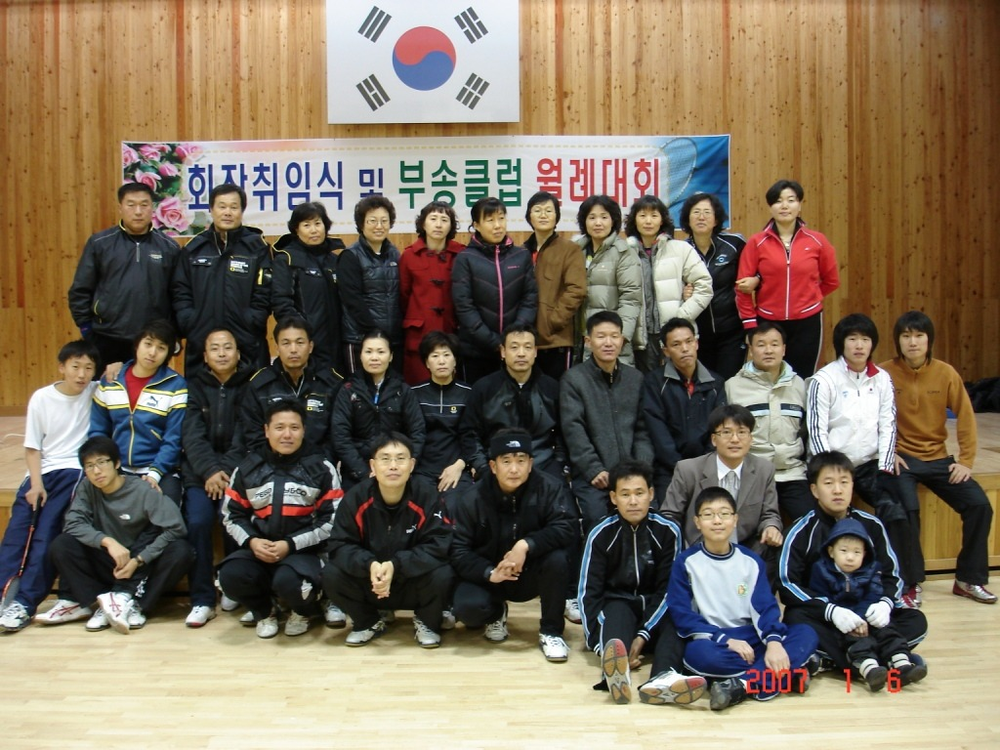
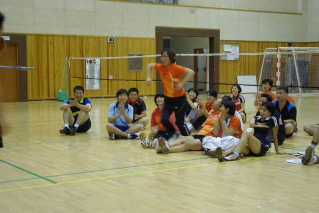
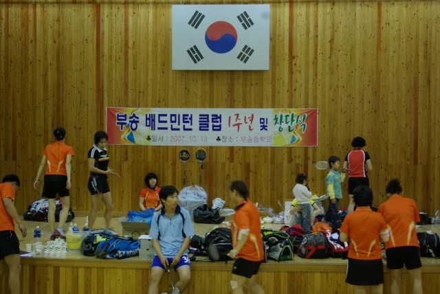

시작과 창단
부송중학교 체육관, 첫 발자국
2007년 1월 6일. 부송 배드민턴 클럽이 첫 발걸음을 뗀 날입니다. 황영일 초대 회장의 취임식과 함께 부송중학교 체육관에서 월례대회가 열렸고, 그해 11월 8일에는 1주년 및 정식 창단식이 거행되었습니다. 시작은 작았지만, 그 안에 20년의 미래가 담겨 있었습니다.

No. 01
★
2007년 1월 6일
회장취임식 및 부송클럽 월례대회 — 부송중학교 체육관

No. 02
2007년 10월 17일
코트 위 활기찬 모습

No. 03
★
2007년 11월 8일
부송 배드민턴 클럽 1주년 및 창단식 — 현수막 명확